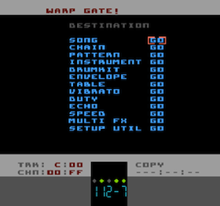

Navigation Menu - 'Warp Gate!'
The Navigation Menu is a way to quickly jump to any editor page no matter where you are in Pulsar's UI - hence the nickname 'Warp Gate'
The Navigation Menu is accessed at any time by SELECT and tapping DOWNSELECTU/D to highlight the page you want and then SELECT
This page also differs from every other by the fact that it is not remembered in your navigation history. So tapping SELECT+LEFT after using the Warp Gate won't take you back to the Warp Gate but to the page you were on before you used the Warp Gate. Make sense? Great.